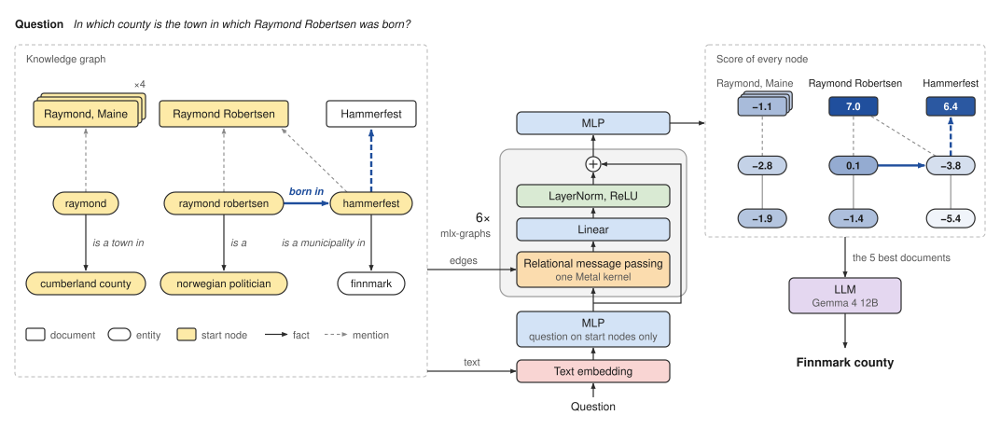
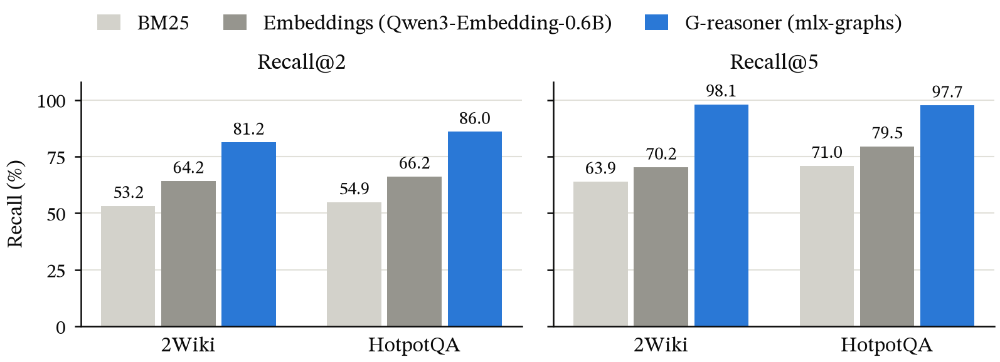
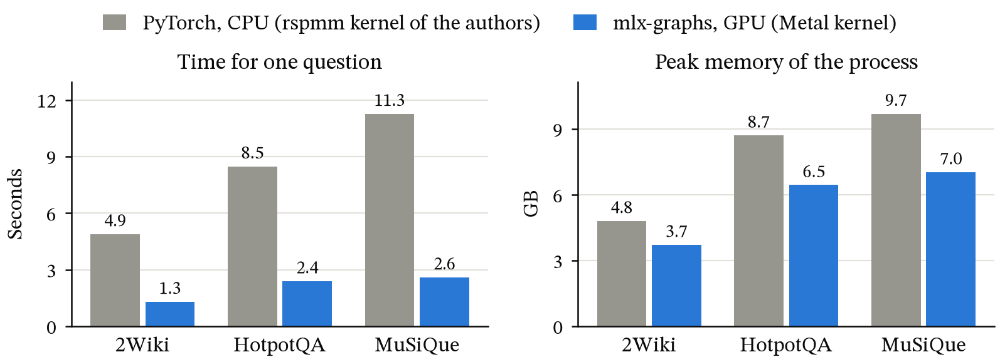

Graph RAG with G-reasoner#
Standard retrieval-augmented generation (RAG) ranks documents by how close their embedding is to the embedding of the question. That fails on multi-hop questions such as “In which county is the town in which Raymond Robertsen was born?”. His page gives the town, Hammerfest. The county is on the Hammerfest page, which never mentions him, so that page does not look like the question.
Graph RAG builds a knowledge graph from the documents: entities and documents are nodes, and the facts that link them are edges. The two pages are now connected through the entity hammerfest. G-reasoner (Luo et al., ICLR 2026) is a graph neural network that scores every node of such a graph for a question.
In this tutorial we run the released G-reasoner checkpoint on a Mac with mlx-graphs, compare it with embedding search on a slice of HotpotQA and give its documents to a local LLM. Everything running inside the Mac.
pip install mlx-graphs mlx-lm huggingface_hub

Running G-reasoner with mlx-graphs#
The data#
Each HotpotQA question needs two Wikipedia passages. The authors of G-reasoner released a knowledge graph that an LLM extracted from these passages as (subject, relation, object) triples. We use a slice of it: the first 100 questions of their test split, with the documents, entities and edges around them. The next cell downloads it from the Hugging Face Hub (0.3 MB).
Each question comes with start nodes, the nodes where it enters the graph. We reuse the ones that the authors released: the 5 documents closest to the question and the entities of the closest facts, after an LLM has discarded the irrelevant facts.
[1]:
import gzip
import json
import pickle
import time
import zipfile
from collections import OrderedDict
import mlx.core as mx
import mlx.nn as nn
import numpy as np
from huggingface_hub import hf_hub_download
from mlx.utils import tree_unflatten
from mlx_lm import generate, load
from mlx_graphs.nn import GeneralizedRelationalConv
mx.set_cache_limit(0)
path = hf_hub_download(
"Djam1998/g-reasoner-hotpotqa-subset",
"hotpotqa_subset.json.gz",
repo_type="dataset",
)
with gzip.open(path) as f:
data = json.load(f)
documents, entities, relations = data["documents"], data["entities"], data["relations"]
questions = data["questions"]
names = [d["title"] for d in documents] + entities # node names, documents first
num_documents = len(documents)
# Every edge also exists in the other direction, with a relation of its own.
source, relation, target = np.array(data["edges"]).T
edge_index = np.stack(
[np.concatenate([source, target]), np.concatenate([target, source])]
)
edge_type = np.concatenate([relation, relation + len(relations)])
print(
f"{num_documents} documents, {len(entities)} entities, "
f"{edge_index.shape[1]} edges, {len(questions)} questions"
)
example = questions[4]
print("\nquestion:", example["question"])
print("supporting documents:", [names[i] for i in example["supporting_documents"]])
print("start nodes:", [names[i] for i in example["start_nodes"]])
print("facts about 'raymond robertsen':")
for s, r, t in data["edges"]:
if names[s] == "raymond robertsen":
print(f" ({names[s]}, {relations[r]}, {names[t]})")
504 documents, 5458 entities, 43750 edges, 100 questions
question: In which county is the town in which Raymond Robertsen was born ?
supporting documents: ['Raymond Robertsen', 'Hammerfest']
start nodes: ['Raymond, Wisconsin', 'Raymond, Washington', 'Raymond, Maine', 'Raymond Robertsen', 'Raymond, Alberta', 'raymond', 'cumberland county', 'hammerfest', 'norwegian politician', 'raymond robertsen']
facts about 'raymond robertsen':
(raymond robertsen, is_mentioned_in, Raymond Robertsen)
(raymond robertsen, is a, norwegian politician)
(raymond robertsen, born in, hammerfest)
(raymond robertsen, is a member of, conservative party)
(raymond robertsen, born on, 12 september 1974)
Text embeddings#
G-reasoner reads embeddings, not text: one vector per node and one per relation. The checkpoint expects Qwen3-Embedding-0.6B, which runs with mlx-lm. The embedding of a text is the hidden state of its last token, normalized.
[2]:
embedder, tokenizer = load("mlx-community/Qwen3-Embedding-0.6B-8bit")
def embed(texts, batch_size=64):
tokens = [tokenizer.encode(text) for text in texts]
order = np.argsort([len(t) for t in tokens]) # batches of similar length
out = np.zeros((len(texts), 1024), dtype=np.float32)
for start in range(0, len(texts), batch_size):
ids = order[start : start + batch_size]
batch = [tokens[i] for i in ids]
width = max(len(t) for t in batch)
# Causal attention: the padding on the right is never attended to.
padded = [t + [0] * (width - len(t)) for t in batch]
states = embedder.model(mx.array(padded))
last = states[mx.arange(len(batch)), mx.array([len(t) - 1 for t in batch])]
last = last.astype(mx.float32)
out[ids] = np.array(last / mx.linalg.norm(last, axis=-1, keepdims=True))
return out
node_texts = [
f"name: {d['title']}\ntype: document\ncontent: {d['content']}" for d in documents
] + [f"name: {name}\ntype: entity" for name in entities]
relation_texts = [f"name: {r}" for r in relations]
relation_texts += [f"name: inverse_{r}" for r in relations]
query = (
"Instruct: Given a web search query, retrieve relevant passages that answer "
"the query\nQuery: "
)
node_emb = embed(node_texts)
relation_emb = embed(relation_texts)
question_emb = embed([query + q["question"] for q in questions])
print(node_emb.shape, relation_emb.shape, question_emb.shape)
(5962, 1024) (4602, 1024) (100, 1024)
The model#
G-reasoner follows NBFNet. For one question:
Every node starts from its text embedding, and the start nodes also receive the embedding of the question.
Six message passing layers spread these states along the edges. Each message is the state of a neighbor multiplied element-wise by a vector for the relation of the edge.
An MLP turns the final state of each node into a score.
Step 2 is GeneralizedRelationalConv in mlx-graphs. Like most message passing layers, it builds one message per edge: with 1024 features, that is 4 GB per million edges, and the full HotpotQA graph has 2.6 million edges. The sum does not need these messages:
So we write a custom Metal kernel for this step with mx.fast.metal_kernel: each GPU thread loops over the edges of one node and accumulates 16 features. FusedRelationalConv keeps the weights and the node update of the mlx-graphs layer and calls the kernel in place of its message and aggregate steps. The kernel has no backward pass (inference only) and is not part of the library yet.
[3]:
relational_spmm = mx.fast.metal_kernel(
name="relational_spmm",
input_names=["row_ptr", "col", "edge_type", "relation", "x"],
output_names=["out"],
source="""
uint node = thread_position_in_grid.y;
uint dim = x_shape[1];
uint offset = thread_position_in_grid.x * 16;
float acc[16];
for (uint k = 0; k < 16; k++) acc[k] = 0.0f;
// The edges of a node are a contiguous range (CSR format).
for (uint e = row_ptr[node]; e < row_ptr[node + 1]; e++) {
uint neighbor = col[e] * dim + offset;
uint rel = edge_type[e] * dim + offset;
for (uint k = 0; k < 16; k++) acc[k] += relation[rel + k] * x[neighbor + k];
}
for (uint k = 0; k < 16; k++) out[node * dim + offset + k] = acc[k];
""",
)
class FusedRelationalConv(GeneralizedRelationalConv):
def __call__(self, csr, x, boundary):
num_nodes, dim = x.shape
aggregated = relational_spmm(
inputs=[*csr, self.relation.weight, x],
grid=(dim // 16, num_nodes, 1),
threadgroup=(dim // 16, 1, 1), # one group per node
output_shapes=[(num_nodes, dim)],
output_dtypes=[mx.float32],
)[0]
# The initial state of a node counts as one more message to itself.
output = self.linear(mx.concatenate([x, aggregated + boundary], axis=-1))
return self.activation(self.layer_norm(output))
[4]:
def mlp(in_dim, hidden_dim, out_dim):
return nn.Sequential(
nn.Linear(in_dim, hidden_dim), nn.ReLU(), nn.Linear(hidden_dim, out_dim)
)
class GReasoner(nn.Module):
def __init__(self, dim=1024, num_layers=6):
super().__init__()
self.question_mlp = nn.Linear(dim, dim)
self.rel_mlp = nn.Linear(dim, dim)
self.ent_mlp = nn.Linear(dim, dim)
self.early_fuse_mlp = mlp(2 * dim, dim, dim)
self.predict_mlp = mlp(3 * dim, dim, 1)
# num_relations=1 is a placeholder: set_graph writes the relation vectors.
self.layers = [
FusedRelationalConv(
dim, dim, num_relations=1, message_func="distmult", aggregate_func="add"
)
for _ in range(num_layers)
]
self.relation_projections = [mlp(dim, dim, dim) for _ in range(num_layers)]
def set_graph(self, edge_index, edge_type, relation_emb, node_emb):
# Everything that does not depend on the question is computed once.
source, target = edge_index
order = np.argsort(source, kind="stable")
row_ptr = np.zeros(len(node_emb) + 1, dtype=np.uint32)
row_ptr[1:] = np.cumsum(np.bincount(source, minlength=len(node_emb)))
self._csr = (
mx.array(row_ptr),
mx.array(target[order].astype(np.uint32)),
mx.array(edge_type[order].astype(np.uint32)),
)
self._node_emb = self.ent_mlp(mx.array(node_emb))
relation = self.rel_mlp(mx.array(relation_emb))
for layer, projection in zip(self.layers, self.relation_projections):
layer.relation.weight = projection(relation)
mx.eval(self._node_emb, [layer.relation.weight for layer in self.layers])
def __call__(self, question_emb, start_nodes):
question = self.question_mlp(mx.array(question_emb))
mask = np.zeros((len(self._node_emb), 1), dtype=np.float32)
mask[start_nodes] = 1.0
# The start nodes carry the question; every node carries its own text.
boundary = self.early_fuse_mlp(
mx.concatenate([mx.array(mask) * question, self._node_emb], axis=-1)
)
hidden = boundary
for layer in self.layers:
hidden = hidden + layer(self._csr, hidden, boundary)
mx.eval(hidden)
question = mx.broadcast_to(question, hidden.shape)
scores = self.predict_mlp(
mx.concatenate([hidden, question, self._node_emb], axis=-1)
)
return np.array(scores[:, 0])
The released weights#
The authors released the checkpoint `rmanluo/G-reasoner-34M <https://huggingface.co/rmanluo/G-reasoner-34M>`__ as a PyTorch file: a zip archive with one raw buffer per tensor and a pickle that describes them. We read it with NumPy, so this tutorial does not need PyTorch, and we rename the weights to the names of the class above.
[5]:
def read_torch_checkpoint(path):
def tensor(storage, offset, size, *unused):
return storage[offset : offset + int(np.prod(size))].reshape(size)
# The only classes that a dictionary of float tensors needs.
allowed = {
("torch._utils", "_rebuild_tensor_v2"): tensor,
("torch", "FloatStorage"): np.float32,
("collections", "OrderedDict"): OrderedDict,
}
with zipfile.ZipFile(path) as archive:
pickle_name = next(n for n in archive.namelist() if n.endswith("data.pkl"))
root = pickle_name[: -len("data.pkl")]
class Reader(pickle.Unpickler):
def find_class(self, module, name):
if (module, name) not in allowed:
raise pickle.UnpicklingError(f"unexpected class {module}.{name}")
return allowed[(module, name)]
def persistent_load(self, pid):
buffer = archive.read(f"{root}data/{pid[2]}")
return np.frombuffer(buffer, dtype=pid[1])
with archive.open(pickle_name) as f:
return Reader(f).load()
checkpoint = read_torch_checkpoint(
hf_hub_download("rmanluo/G-reasoner-34M", "model.pth")
)
weights = []
for name, value in checkpoint["model"].items():
name = name.replace("entity_model.", "")
if "relation_projection." in name:
# layers.3.relation_projection.0.weight
# -> relation_projections.3.layers.0.weight
_, layer, _, rest = name.split(".", 3)
name = f"relation_projections.{layer}.layers.{rest}"
for block in ("early_fuse_mlp.", "predict_mlp."):
name = name.replace(block, block + "layers.")
weights.append((name, mx.array(value)))
model = GReasoner()
model.update(tree_unflatten(weights))
model.set_graph(edge_index, edge_type, relation_emb, node_emb)
Scoring the documents of one question#
Let’s rank the documents for the question about Raymond Robertsen by embedding similarity and with G-reasoner. We picked this question because its second document does not look like the question. A star marks a supporting document.
[6]:
def rank(i):
similarity = node_emb[:num_documents] @ question_emb[i]
scores = model(question_emb[i], questions[i]["start_nodes"])[:num_documents]
return similarity, scores
similarity, scores = rank(4)
for title, values in (("embedding similarity", similarity), ("G-reasoner", scores)):
print(title)
for d in np.argsort(-values)[:5]:
star = "*" if d in example["supporting_documents"] else " "
print(f" {star} {names[d]:22s}{values[d]:6.2f}")
embedding similarity
* Raymond Robertsen 0.68
Raymond, Alberta 0.57
Raymond, Washington 0.56
Raymond, Wisconsin 0.55
Raymond, Maine 0.55
G-reasoner
* Raymond Robertsen 7.01
* Hammerfest 6.38
Raymond, Maine -1.11
Raymond, Washington -1.98
Raymond, Alberta -2.87
Embedding search finds the page about Raymond Robertsen and then four towns named Raymond. G-reasoner ranks Hammerfest second, far above the rest. It had help: the released start nodes already contain the entity hammerfest, found through the fact (raymond robertsen, born in, hammerfest). G-reasoner carries the question from that entity to the page that mentions it.
Now all 100 questions. Recall at k is the share of the supporting documents that are in the top k. The last row is the 5 start documents taken as they are, with no ranking: this is what G-reasoner starts from.
[7]:
results = {"embedding search": [], "G-reasoner": []}
start_recall, seconds = [], []
for i, question in enumerate(questions):
supporting = set(question["supporting_documents"])
tic = time.perf_counter()
similarity, scores = rank(i)
seconds.append(time.perf_counter() - tic)
for method, values in (("embedding search", similarity), ("G-reasoner", scores)):
top = np.argsort(-values)[:5].tolist()
found = [len(supporting & set(top[:k])) / len(supporting) for k in (2, 5)]
results[method].append(found)
start_documents = {n for n in question["start_nodes"] if n < num_documents}
start_recall.append(len(supporting & start_documents) / len(supporting))
print(f"{'':20s}recall at 2 recall at 5")
for method, values in results.items():
at_2, at_5 = 100 * np.mean(values, axis=0)
print(f"{method:20s}{at_2:10.1f}%{at_5:12.1f}%")
print(f"{'start documents':20s}{'-':>11s}{100 * np.mean(start_recall):12.1f}%")
print(f"\nG-reasoner takes {1000 * np.median(seconds):.0f} ms per question")
recall at 2 recall at 5
embedding search 67.0% 91.0%
G-reasoner 88.0% 98.5%
start documents - 94.5%
G-reasoner takes 137 ms per question
On the full benchmarks#
We ran the same model on the three benchmarks of the paper (1,000 questions each, graphs of up to 114,000 nodes and 3.0 million edges) on a MacBook Pro M1 Pro with 32 GB. Recall at 2 / at 5 matches the paper:
HotpotQA |
MuSiQue |
2Wiki |
|
|---|---|---|---|
paper |
85.9 / 97.7 |
54.8 / 74.9 |
81.2 / 98.2 |
this tutorial |
86.0 / 97.7 |
54.7 / 74.8 |
81.2 / 98.1 |


Going further: a local LLM with G-reasoner as retriever#
Now let’s give these documents to an LLM. Gemma 4 12B in 4 bits (8.4 GB) runs with mlx-lm, so the whole chain stays on the Mac. We ask the same question with no documents, with the top 5 from embedding search and with the top 5 from G-reasoner.
[8]:
llm, llm_tokenizer = load("mlx-community/gemma-4-12B-it-qat-OptiQ-4bit")
content = {d["title"]: d["content"] for d in documents}
def ask(question, titles=()):
system = "Give only the answer, in a few words, with no explanation."
if titles:
system = "Answer the question with the help of the documents. " + system
context = "\n\n".join(f"[{title}]\n{content[title]}" for title in titles)
question = f"{context}\n\nQuestion: {question}"
prompt = llm_tokenizer.apply_chat_template(
[{"role": "system", "content": system}, {"role": "user", "content": question}],
add_generation_prompt=True,
enable_thinking=False,
)
return generate(llm, llm_tokenizer, prompt, max_tokens=32).strip()
similarity, scores = rank(4)
print(example["question"])
print(f"{'no documents:':18s}", ask(example["question"]))
for method, values in (("embedding search", similarity), ("G-reasoner", scores)):
titles = [names[d] for d in np.argsort(-values)[:5]]
print(f"{method + ':':18s}", ask(example["question"], titles))
In which county is the town in which Raymond Robertsen was born ?
no documents: I do not have enough information to answer this.
embedding search: The documents do not provide this information.
G-reasoner: Finnmark county
Only the documents from G-reasoner include the Hammerfest page, so only that run finds the county. This is one question. On the first 100 questions of the full 2Wiki benchmark, Gemma gives the exact answer to 32 questions with no documents, 46 with BM25, 46 with embedding search and 71 with G-reasoner.
To ask your own question you need its start nodes, and to use your own documents you need a graph. The gfm-rag repository of the authors has the code for both.
References: G-reasoner (Luo et al., 2026), NBFNet (Zhu et al., 2021) and HotpotQA (Yang et al., 2018, distributed under CC BY-SA 4.0).